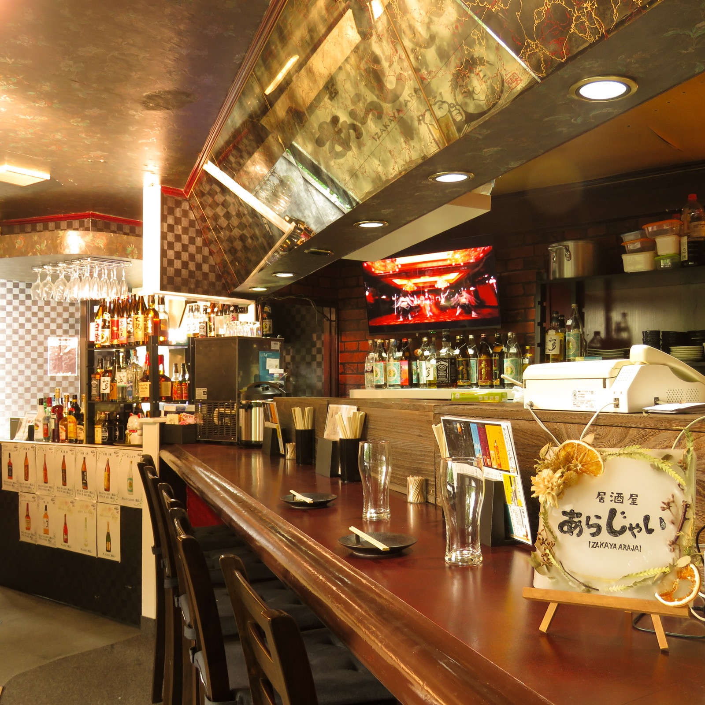
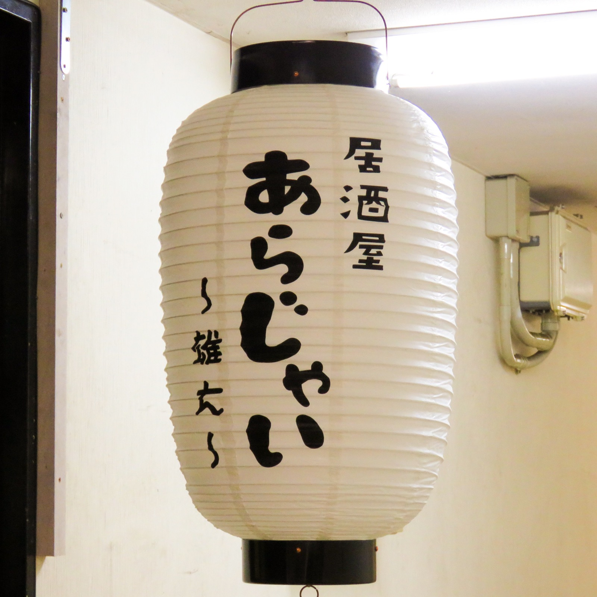

日替わりのお通し
毎回同じではない一品から始まるのが、居酒屋あらじゃいの楽しみです。
相模原 居酒屋あらじゃい
日替わりのお通し、豊富なお酒、料理、カラオケ。賑やかな夜を気軽に楽しめる居酒屋です。
あらじゃいのこだわり
最初の一品からお酒選び、料理、カラオケまで。肩ひじ張らずに過ごせる空気感を大切にしています。
毎回同じではない一品から始まるのが、居酒屋あらじゃいの楽しみです。
焼酎、ウイスキー、リキュールなど、店内写真からも多彩なお酒が並ぶ様子が伝わります。
飲んで、食べて、歌える。相模原 カラオケ 居酒屋を探している方にもおすすめです。
相模原 宴会や相模原 貸切の相談は電話で受け付けています。予約・相談は電話受付のみです。

写真掲載メニュー
Drive内の料理写真をもとに掲載しています。価格情報が確認できないため、価格は掲載していません。
千鳥さんのネタを大好きだったことから、いつか自分のお店をやるなら「あらじゃい」にすると決めていたんです。
テレビ番組「千鳥かまいたちアワー」で取り上げられた経験もある、話のきっかけになる店名です。公式コラボではなく、店主の思い入れとして自然に親しまれています。
